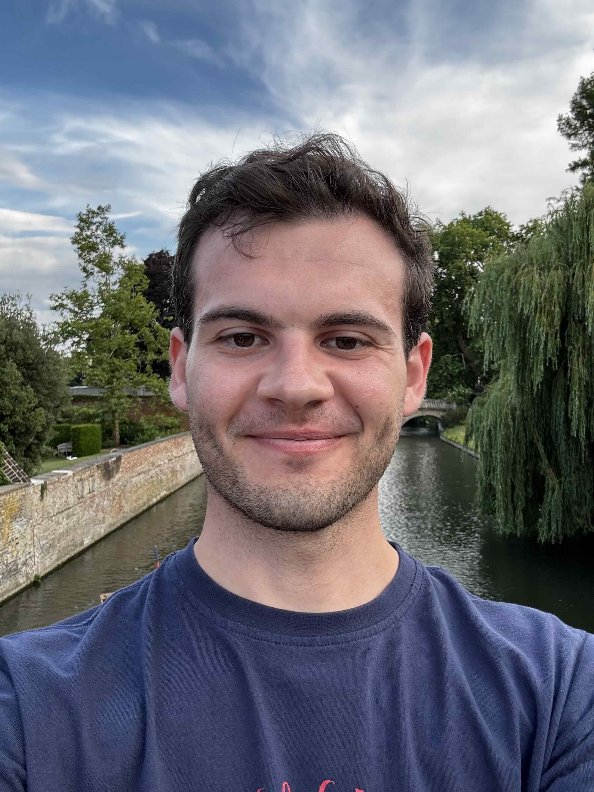

Master's student in theoretical physics. Looking for a PhD.
I studied a bachelor of science at the University of Cape Town in South Africa with triple majors in physics, astrophysics and pure mathematics. I then read for an honours in physics at the University of Cape Town as well as a master's by dissertation in theoretical physics. I recently completed part III of the mathematical tripos at the University of Cambridge. I am looking for a PhD position in theoretical physics.
under construction
under construction